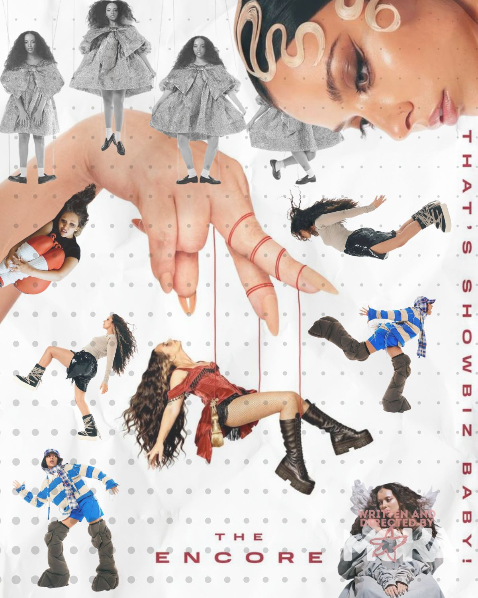

Tres discos que se instalaron en nuestro espacio creativo y que acompañan las horas de trabajo, inspiración y regalan ideas.
Algunos álbumes nos acompañan durante semanas, otros se convierten en parte de nuestra identidad. Estos son tres discos que forman parte del universo Moka y queremos compartirlos con vos.
Zara Larsson logró consagrarse con su reciente álbum Midnight Sun y redobló su propia apuesta con “Girls Trip”. Un disco de remixes que reúne figuras femeninas icónicas como Shakira y Pink Pantheress. Mantiene la esencia del proyecto inicial con ritmos divertidos y una estética colorida inspirada en el Y2K.
Escuchar en Spotify →
El álbum debut de la ex integrante de Little Mix llegó para quedarse. Por medio de una mezcla de hiperpop y diversas influencias sonoras, JADE explora como se construye la vida, los sentimientos y las relaciones en un mundo tan crudo como la industria musical y la fama.
Escuchar en Spotify →Lux nos obsesiona por su alma y su composición visual. En este álbum, Rosalía experimenta un sonido maximalista en contraposición a su anterior disco, Motomami (del cual podrás leer en nuestra tercera edición). Dejando atrás lo carnal y mundano, para concentrarse en una propuesta espiritual.
Escuchar en Spotify →La música tiene la capacidad de acompañarnos, complementarnos y convertirse en el escenario invisible de ciertos momentos de la vida. Estos tres álbumes forman parte de Moka porque, de maneras distintas, lograron quedarse con nosotras mucho después de terminar la última canción.